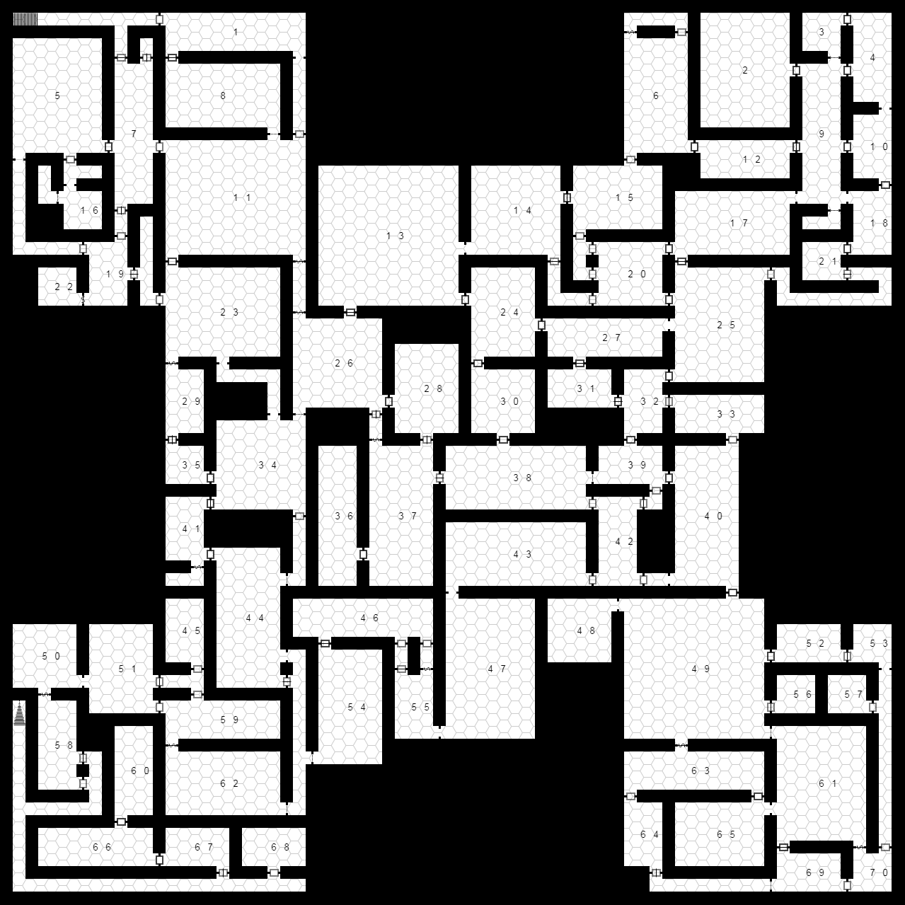

An update on the generator front

If you haven't downloaded an updated copy of the dungeon generator in the last month or so, it's long past time to do so. We've changed the name of the starting web page so I've updated the instructions accordingly. I've also failed to let you guys know about some major feature upgrades since the first release, so let's take a moment to talk about those:
- We now have what we call "pick and mix" rooms. There's a 50/50 chance for a room to be labeled as such. At present, the generator picks a threat level for the room (nuisance, fodder, worthy, boss or epic) then decides if it'll be a mixed room. When that happens, the generator picks a monster adds some then picks another monster that fits within the budget for the threat level. If there's still room it'll pick another monster in the budget and so on.
- We've added per room lighting as well as overall dungeon lighting.
- We've improved the way the seeding works. Going forward, if you use the same name and same options for a dungeon it'll give you the same monsters. We can't do this for treasure due to the way it's generated.
- Much headway has been made on making the initial code we based this on more readable and usable for others who want to develop with it.
- For boss and epic level encounters, there will always be treasure.
- Monsters are no longer generated in rooms they don't fit in. This doesn't prevent the dungeon from trying to put 8 monsters where only one fits.
- Added a "Tight" density to dungeon layout.
So what's up and coming for the generator?
- One of our near term goals is to add door descriptions to the room. Eventually, we'd like to point out which rooms the doors lead to in order to remind GM's about who might be listening to nearby activity.
- Wandering Monster tables. This is a big deal in terms of encouraging players to keep moving at a decent clip and to keep them from resting all day after every fight.
We have some long term aspirations to give you tips/hints/rumors to drop in town, and quests to accomplish inside the dungeon and other interesting stuff. This project is still in beta, so if you want to report bugs, give ideas or just basic feedback (positive or negative), communicate in the comments here, on the github page or on the SJ Games forums.